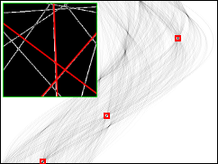
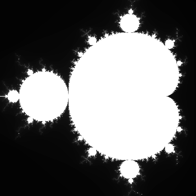
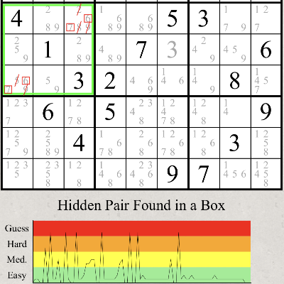
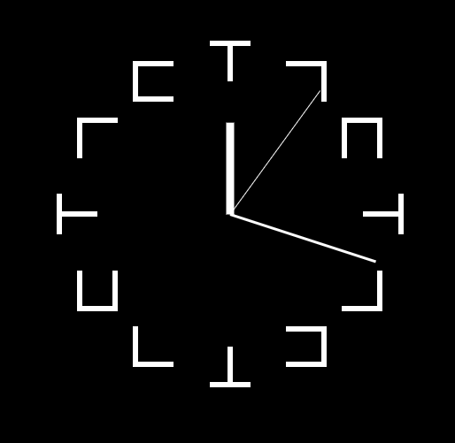
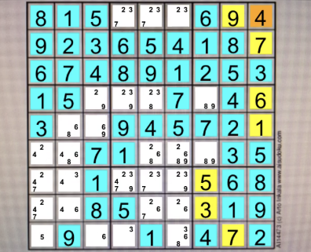
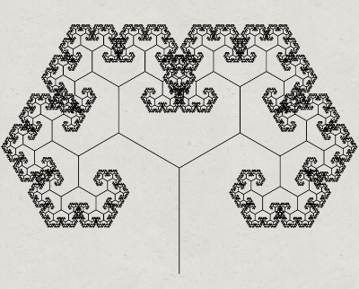
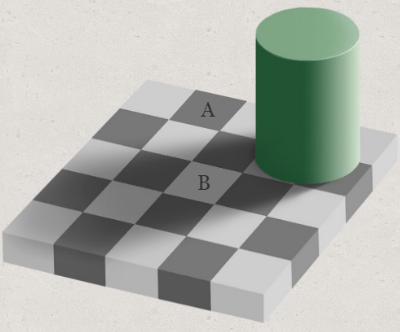
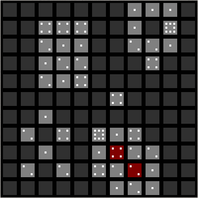

Welcome to Ray's site
ようこそ、冷解凍のホームページへ。
JavaScriptのプロジェクトを公開しています。
詳細はProjectタブを開いてください。
About Ray
概要:
身長175cm、体重65kg、好物はハンバーガー。 趣味はプログラミングで、特にJavaScriptとPythonをいじることが多い。 いま一番学びたいのはPythonを用いたビッグデータ解析と機械学習。 でも環境構築とかテーマ選定とかめんどくさいから自分のHPを製作中。
来歴:
1996年のある日、佐賀県の病院で生まれた。雪が降る寒い朝だった。 親が転勤族だったこともあり、生後3ヶ月でパスポートを取得し、ブラジルへ引っ越す。 その後5年間ブラジル各地を転々とし、日本へ帰国。したかと思えばすぐにタイへ。 1年半ほど日本人学校に通った後に再び帰国、6年ほど日本での生活を満喫する。 が、中学1年が終わるころにアメリカの僻地に飛ばされる。 誕生時の寒さも吹き飛ぶような極寒の地で毎日雪かきに明け暮れた。 中学生らしく「こんなに降ってるなら休校でいいじゃん」と思ってた。 ある朝に先生が雪で滑り骨折した。 それ以降は少しでも雪が降ると休校になった。 中学生ながら「大人の思考回路も単純だな」と思った。
学歴:
知識の9割は中学受験で学んだ内容である。 地球の自転軸の傾きが何度とか、衆議院議員は何人とか、人として扱われる最低限度の知識を身に着ける。 高校で先輩とロボコン部を創設し、最後の年には23位(4000チーム中)に入ることが出来た。その時先輩はいなかったが... 上記の経験から工学部を目指すようになり、とある州立大学で機械工学を専攻する。 祖国での生活を夢見て大学卒業後に日本の工業大学に入学する。 濡れ性の違いによるフィンガリング現象がチカン効率に与える影響をポアネットワークを用いて考察した。 卒業後は中部の会社に入社した。
Ray's Projects
|
Dielectric Breakdown Model: Simulates the dielectric breakdown and it will create a Lichtenburg figure. |
|
|
Random Walker: Simulates random walk. |
|

|
Invasion Percolation: Simulates the Invasion Percolation |

|
Fourier Polynomial: Visualization of the fourier polynomial |
|
TENET: |
|
|  |
Vision Program: Just for fun. |
|  |
Mandelbrot Set: You can zoom on the Mandelbrot Set. |
|  |
Sudoku Analyzer: This program analyzes Sudoku Puzzles. |
|  |
Clock ZERO A: An Analog Clock with base 12 number system. Works fine but...but why? |
|  |
Sudoku Solver 3: Now you don't have to type each number to solve a sudoku. All you need is a camera on a smart phone! |
|  |
Fractal Tree: Create your own fractal tree! You can adjust three parameters (Repetition, Split Angle, and Length Scaling)to change its shape. |
|  |
Checker Shadow: It tells you how much your bain is messing with your vision on a scale from 0% to 100%. |
|  |
Swipe or Tap: This game is ridiculously boring. Oh well, it's designed by RayKaito. |

|
The Dog Fight: It's a simple shooting game. Too simple that even I don't wanna play. I wanted it to be like Ace Combat. |

|
Clock ZERO: A Clock with base 12 number system. Works fine but...but why? |

|
Catan Tracker: How unlucky were you when you played Catan? Use this program to find out. It tracks your "Luckyness Index" and the amount of "Expected Resources." |

|
Five In a Row: Simple board game with AI you can play aginst. |

|
Sudoku Solver: It solves sudoku puzzles. It can crack any Sudoku as long as it has a unique solution to it, but it takes forever to input numbers. |
Ray's Gallery
ようこそ、カイトウのホームページへ。このサイトは私が趣味で個人的に作ったものであり、とくに社会に貢献することもなければ、誰かの役に立つ情報を含んでいるわけでもありません。 ようこそ、カイトウのホームページへ。このサイトは私が趣味で個人的に作ったものであり、とくに社会に貢献することもなければ、誰かの役に立つ情報を含んでいるわけでもありません。 ようこそ、カイトウのホームページへ。このサイトは私が趣味で個人的に作ったものであり、とくに社会に貢献することもなければ、誰かの役に立つ情報を含んでいるわけでもありません。